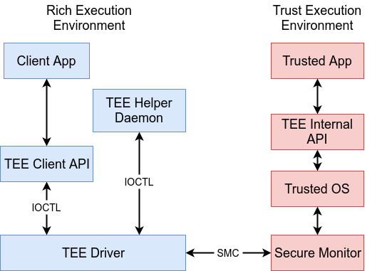
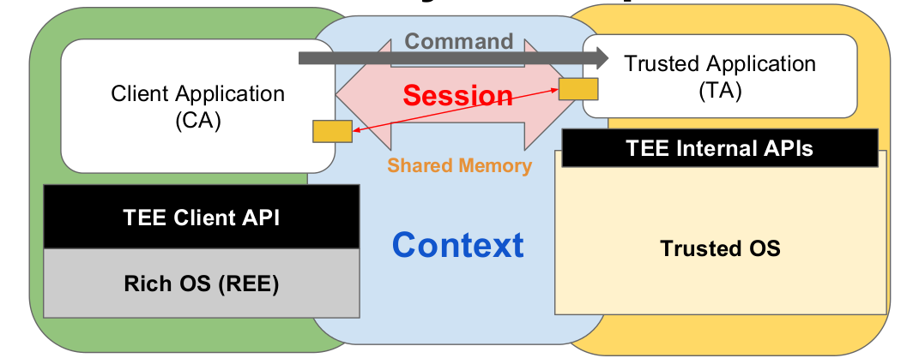
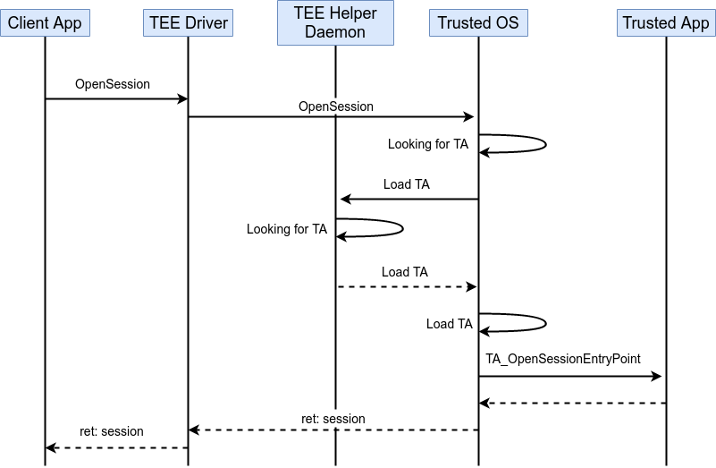
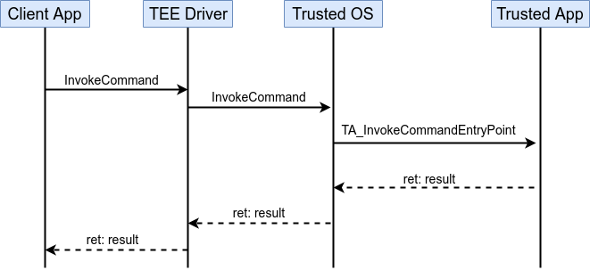
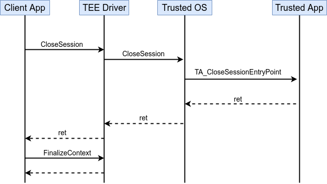

前言
- 本文建立在你已经对 TEE 技术的基础知识有一定了解的基础之上，如需了解，可以阅读本博客的文章《指纹 TEE》1。
- 本文将基于 OP-TEE2 开源 TEE 软件，介绍 TEE 软件中，REE 客户端访问 TEE 环境资源的具体调用流程。 为此，本文首先会介绍实现 REE 到 TEE 调用的各个基础组件组成以及各自功能，然后分析各个基础组件的交互流程时序，使读者对 TEE 软件的运行逻辑有大概的了解。
TEE 软件交互基础组件简介
- TEE 系统软件从整体上包含 REE 和 TEE 两部分，各自对应的基础组件如图1所示。

- REE 部分 Client Applications（CA） 一般是指指纹录入，支付应用等上层应用，其通过调用 TEE Client API 接口来与 TEE 环境的 Trusted OS 进行交互，这里的 TEE Client API 包括 TEE 厂商自定义的一些接口或 GlobalPlatform（GP） 全球组织定义的通用 API，其目的是制定一套标准的编程接口，方便开发者在不同软硬件平台下使用同一套代码实现其功能。
- TEE Client API 通过 ioctl 系统调用对 TEE Driver 进行操作，TEE Driver 是沟通 REE 和 TEE 的桥梁，其通过 SMC 指令，实现将上层的 OpenSession，InvokeCommand，CloseSession 等标准调用的请求转发到 TEE 环境，同时其也会处理来自 TEE 的请求，将请求转发到 TEE Helper Daemon 让其处理。
TEE Helper Daemon 是一个辅助进程，用于 TEE 请求 REE 的资源。 一般来说，TEE 需要获得存储在 EMMC 的数据文件（例如安全加密文件，TA 可执行镜像文件等），而读写 EMMC 操作需要复杂的内核驱动的支持，显然如果把读写 EMMC 的驱动放到 TEE 侧运行会使软件复杂度会变得很高，因此 REE 需要一个可以访问这些资源的辅助进程支持，这就是 TEE Helper Daemon 的基本功能。TEE Helper Daemon 在软件逻辑实现上比较简单，以 OP-TEE 的 tee-supplicant 辅助进程为例，整体上是一个循环流程: 其首先通过 ioctl 接口查询是否有来自 TEE 的请求，如果没有，则进入睡眠等待状态，等待 TEE Driver 的唤醒信号，当 TEE Driver 收到来自 TEE 的请求后，会唤醒 tee-supplicant 辅助进程，然后根据请求号进行相应处理（读写数据文件，读写 EMMC 设备分区等），最后返回结果到 TEE Driver，完成一次循环，具体实现可参照《OP-TEE 中 tee-supplicant 执行流程》3
- TEE 侧的 Secure Monitor 的主要作用是实现 REE 和 TEE 环境的切换，转发请求到 Trusted OS。当 Secure Monitor 收到 TEE Driver 的 SMC 请求后，会将 CPU 切换到 Secure 状态，然后转发请求到 Trusted OS 来处理，Trusted OS 会找到请求对应的 Trusted App（TA） 去处理请求，具体逻辑流程会在下一节中详细说明。 另外 Secure Monitor 还用于开机时候 Trusted OS 的引导工作，此内容不在本文的叙述范围，读者可以参看: 《Secure-EL1 Payloads and Dispatchers》4
- Trusted OS 是运行在 TEE 侧的小型操作系统，简单来说，其作用是:
- 构建满足 TA 运行的安全运行环境
- 提供安全外设（SPI，I2C，Timer 等）的驱动程序
- 根据 REE 的请求，调度相应 TA 处理请求
- 提供 TA 运行所需要的加解密，随机数生成，证书生成校验等通用函数库
- 上文提到 GlobalPlatform（GP） 全球组织定义的通用 API，TEE Client API 供 REE 侧的 CA 使用，TEE Internal API 则是供 TA 调用 Trusted OS 资源的标准 API，同样是用于方便 TA 开发者在不同软硬件平台进行开发。
TEE 软件交互流程
上文对 REE 调用 TEE 软件交互所需要的基础组件及其基本作用进行了介绍，下面将对各个组件的交互流程进行介绍。
在 GP 标准中，CA 要与 TA 进行通信，需要建立如图2所示的软件逻辑流程:
- 首先 CA 需要与 Trusted OS 之间建立一个 Context（InitializeContext），以后此 CA 与 TEE 环境的所有通信均基于此 Context。
- 然后 CA 会向 Trusted OS 申请与请求的 TA 建立一个 Session（OpenSession）。
- CA 与 TA 之间的 Session 建立完成后，CA 就可以向 TA 发送 Command（InvokeCommand）。
- Command 及其参数会通过共享内存的方式传递，TA 从共享内存中获取到 CA 的请求以及请求参数。
- TA 在 TEE 环境下执行处理，得到的处理结果重新填充到共享内存中，CA 通过共享内存就可以获取到处理结果。
- 获得处理结果后，如不需要进一步请求，则由 CA 发起关闭 Session 的请求（CloseSession），Trusted OS 回收 TA 相关资源，最后 CA 发起销毁 Context 的请求（FinalizeContext），完成一次完整交互。

从以上流程可以看到，整个交互流程主要涉及 InitializeContext，OpenSession，InvokeCommand，CloseSession 和 FinalizeContext 5个操作。
InitializeContext 用于 Trusted OS 分配 TA 运行需要的安全内存，FinalizeContext 则是销毁相应内存，具体流程分别与 OpenSession 和 CloseSession 类似，本文将不对这两个操作赘述。
下面看看 OpenSession，InvokeCommand 和 CloseSession 这几个操作下，各个基础组件的交互时序。
OpenSession 时序如图3所示，操作步骤如下:

- CA 经过 TEE Client API 向 TEE Driver 发送 OpenSession 请求。
- TEE Driver 发送 OpenSession SMC 请求到 Trusted OS，此请求中包含要请求 TA 的唯一标识号（UUID）。
- Trusted OS 会根据 TA 的 UUID 查找 TA 是否已经加载了，如果已经加载了，则执行步骤6，否则执行步骤4。
- 若请求的 TA 未加载，则 Trusted OS 会向 TEE Helper Daemon 进程发送 Load TA 命令请求，TEE Helper Daemon 收到请求后，会根据要加载的 TA 的 UUID，从文件系统指定路径下找到 TA 镜像文件，并将其加载到预先分配的共享内存中，最后将共享内存的地址回传给 Trusted OS（这次地址回传实际需要经过 TEE Driver 进行虚拟地址与物理地址转换）。
- Trusted OS 从回传的共享地址拷贝 TA 镜像到安全内存中，然后对安全内存中的 TA 镜像的 ELF 格式头，签名信息进行校验，校验通过则加载成功，否则返回错误信息给 CA。
- TA 加载成功后，Trusted OS 分配一个 Session 操作句柄，并定位到已加载镜像的 TA_OpenSessionEntryPoint 函数入口执行。
- 最后，Trusted OS 将分配的 Session 句柄逐级返回，最终 CA 拿到 Session 句柄，以后的 InvokeCommand 将需要依赖此句柄进行调用。
InvokeCommand 和 CloseSession 的流程与 OpenSession 流程相似，差别在于少了 load TA 的流程，时序图如图4和图5所示。


参考资料
1. 指纹 TEE ↩
2. OP-TEE design ↩
3. OP-TEE中tee-supplicant执行流程 ↩
4. Secure-EL1 Payloads and Dispatchers ↩
This is copyright.